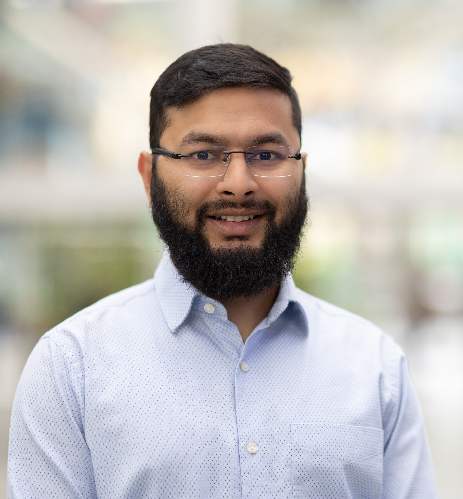

Healthcare
ECG heartbeat classification, blood-cell image analysis and diabetes modelling.
AI and ML in Healthcare
Data Science · Machine Learning · Deep Learning · Computational Statistics
Understanding data.
Informing decisions that matter.
I am a Master of Data Science student at Adelaide University, with an undergraduate background in Industrial and Production Engineering. My research applies machine learning and statistical analysis to Healthcare, Housing Affordability and Forecasting.
ABOUT MY WORK
Healthcare · Housing Affordability · Forecasting
My research interests centre on healthcare, housing and forecasting, using machine learning and computational statistics. In healthcare, I am interested in reliable models for biosignal and medical image analysis, including ECG heartbeat classification, blood-cell recognition and disease prediction.
In housing, I investigate rental affordability, geographic disparities and pressures affecting communities, particularly international students, through public data analysis and interactive visualisation.
In forecasting, I explore foundation models, their generalisation and uncertainty calibration alongside conventional methods. My broader interests include statistical inference, regression modelling and Industrial System Engineering for optimisation.
Education, Experience & Skills ↗RESEARCH AREAS
ECG heartbeat classification, blood-cell image analysis and diabetes modelling.
AI and ML in HealthcareRental affordability, geographic differences and interactive public-data analysis.
Housing ResearchFoundation-model evaluation, forecasting and uncertainty calibration.
Time Series ResearchExploratory analysis, statistical inference and regression modelling.
Statistical ResearchDiscrete-event simulation, production flow and bottleneck analysis with FlexSim.
Simulation ResearchImage classification and clustering using classical and deep learning methods.
Image Processing ProjectsPlayer investment, stadium profitability and venue performance.
Data-Driven Decision MakingFEATURED RESEARCH
HOUSING
Rental affordability and geographic comparisons for international students, supported by public data and an interactive Shiny application.
Explore Housing ResearchHEALTHCARE
Comparing logistic regression, random forest and CNN models for ECG heartbeat classification, with a focus on class imbalance and minority-class performance.
Explore MIT-BIH ResearchTIME SERIES
Comparing Chronos and TimesFM with conventional forecasting methods across Bitcoin and South Australian electricity demand.
Explore Time Series ResearchPUBLICATIONS
Proceedings of the 7th Bangladesh International Conference on Industrial Engineering and Operations Management (IEOM), Dhaka, Bangladesh
A study of cutting parameters and machine performance in an Industrial Engineering context.
View PublicationProceedings of the 7th Bangladesh International Conference on Industrial Engineering and Operations Management (IEOM), Dhaka, Bangladesh
Simulation-based investigation of inbound logistics in the automobile industry using FlexSim.
View PublicationHEALTHCARE · MACHINE LEARNING
Comparing logistic regression, random forest and a compact CNN on four MIT-BIH heartbeat classes using a record-level train/test split. The project examines class imbalance and per-class performance, showing why overall accuracy alone can hide missed abnormal beats.
HEALTHCARE · DEEP LEARNING
Eight-class microscopy image classification using a compact residual network built in PyTorch. Compares MLP and CNN baselines with ablations of class weighting, label smoothing and optimiser choice. Reported performance is validation-based; the supplied test images have no ground-truth labels.
HEALTHCARE · NEURAL NETWORK
Comparing three multilayer perceptron architectures for binary tabular classification. Includes missing-value treatment, feature scaling, stratified partitions and model selection using validation ROC-AUC, followed by held-out evaluation.
HOUSING · PUBLIC DATA
Rental market analysis for international students using selected fourth-quarter observations from 2020-2025. Compares geography, dwelling types and bedroom categories, with a linked Shiny application for affordability and sharing scenarios.
FOUNDATION MODELS · FORECASTING
Comparing Chronos and TimesFM with conventional forecasting models across Bitcoin and South Australian electricity demand. The analysis considers accuracy, robustness, temporal stability, uncertainty calibration and auditability under rolling and day-ahead forecasting protocols.
ACADEMIC PERFORMANCE ANALYTICS
Distribution analysis of 2,392 student records, tutoring comparisons, GPA summaries and checks of Normal-model probability estimates against empirical values.
ACADEMIC PERFORMANCE ANALYTICS
ANOVA, Tukey HSD, two-sample t-tests and chi-squared analysis examine academic associations with explicit assumptions and a 10% significance threshold.
ACADEMIC PERFORMANCE ANALYTICS
Simple and multiple linear regressions examine GPA associations with study time, absences and support factors. Results describe in-sample fit, with residual diagnostics and no claim of validated prediction for new students.
SIMULATION
Discrete-event simulation across automobile coating, assembly, integrated production and an FMCG case study. The portfolio investigates bottlenecks, work in progress, throughput, yield and machine efficiency. It includes five automobile simulation models; the FMCG evidence is report-derived.
ENGINEERING DESIGN
Collaborative design and physical prototyping of a low-cost automated EPS cutting machine. The work combines customer-needs analysis, Quality Function Deployment, functional decomposition, CAD assembly and material selection, with a demonstrated cutting output.
SUPERVISED & UNSUPERVISED LEARNING
Logistic regression and RBF-kernel SVM for distinguishing digits 1 and 7, with PCA and K-Means used to explore handwriting variations within digit 7.
COMPUTER VISION
Five-class CNN classification on a small, imbalanced image dataset. Compares SGD and Adam configurations and examines the gap between validation and internal test performance.
REGRESSION MODELLING
Analysis of player salaries, crowd size and Goal Shooter accuracy using data cleaning, Box-Cox transformations, regression and interval estimates. Examines where a model of a bounded outcome becomes unreliable.
PROFITABILITY MODELLING
Classification trees and logistic regression assess profitability scenarios for a proposed netball venue. Compares operational configurations while separating modelled probabilities from a costed investment decision.
EXPLORATORY ANALYSIS
Exploratory analysis of Australian netball results, home-court performance, attendance and venue income. Includes cleaning malformed match records, reshaping data and deriving season-level indicators.
WORKFORCE ANALYTICS
A Tableau executive dashboard comparing Qantas and Virgin Australia across flight reliability, workforce capacity, retention and route-level cancellation patterns from 2022-2025. Includes a packaged workbook, processed data and an executive report.
Proceedings of the 7th Bangladesh International Conference on Industrial Engineering and Operations Management (IEOM), Dhaka, Bangladesh
A study of cutting parameters and machine performance in an Industrial Engineering context.
View PublicationProceedings of the 7th Bangladesh International Conference on Industrial Engineering and Operations Management (IEOM), Dhaka, Bangladesh
Simulation-based investigation of inbound logistics in the automobile industry using FlexSim.
View PublicationCURRENT RESEARCH
My current work extends into time-series foundation models, trustworthy machine learning and healthcare classification.
Explore Current Research ↗2025 - Present
Adelaide University · Adelaide, Australia
GPA: 6.2 / 7.0
Expected graduation: November 2026.
2020 - 2024
Military Institute of Science and Technology (MIST) · BUP · Bangladesh
CGPA: 3.69 / 4.00
Feb - Dec 2024
Business Operations & Development · Anwar Group of Industries · Bangladesh
Supported business operations and process-development initiatives across manufacturing units, applying Industrial Engineering methods to operational problems.
Jan 2026 - Present
Adelaide University
Support and mentor incoming postgraduate students during their transition to university life and study.
Jan - Jun 2023
Military Institute of Science and Technology (MIST) · Bangladesh
Led club operations and career-development initiatives, coordinating students, faculty and external stakeholders.
Python, R, PyTorch, TensorFlow/Keras, scikit-learn and tidyverse
Regression, Classification, Clustering, Ensemble Methods and Dimensionality Reduction
Neural Networks, CNNs, LSTMs, Transfer Learning and Self-Supervised Learning
ARIMA/SARIMA, Prophet, Chronos, TimesFM and Uncertainty Calibration
Data Preprocessing, Feature Engineering, Hyperparameter Tuning and Model Evaluation
Hypothesis Testing, ANOVA, Bootstrapping and Regression Analysis
Tableau, Shiny, Plotly, Quarto, Git/GitHub and Jupyter
CONTACT
I welcome conversations about PhD opportunities and research
in machine learning and its real-world applications.